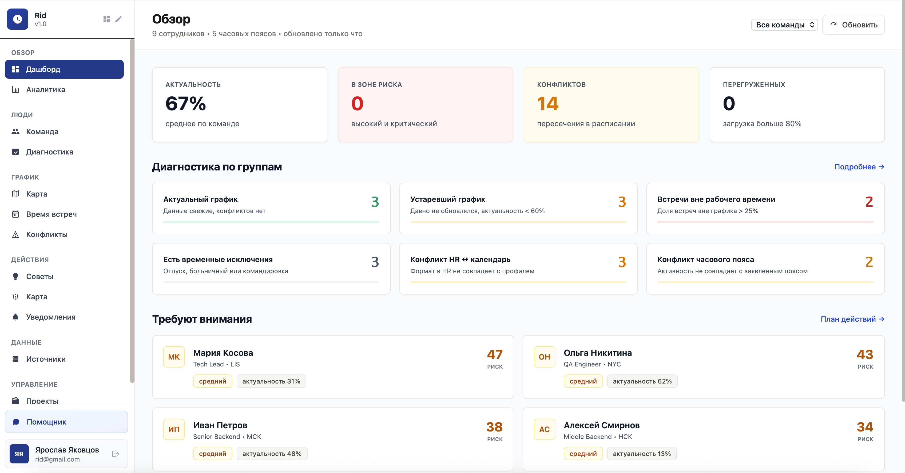
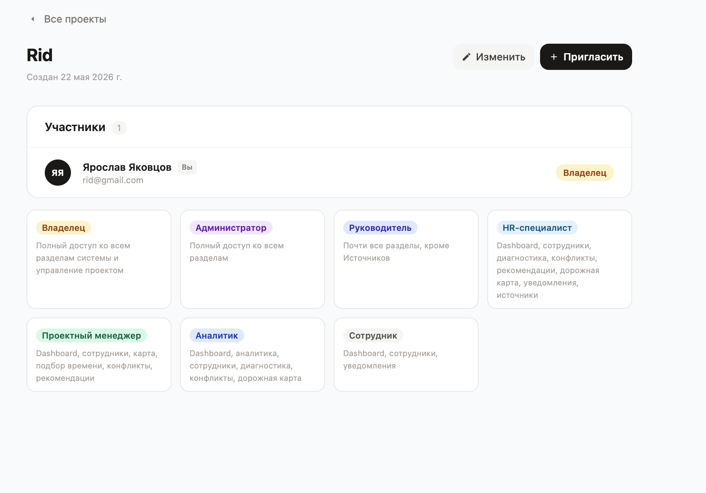
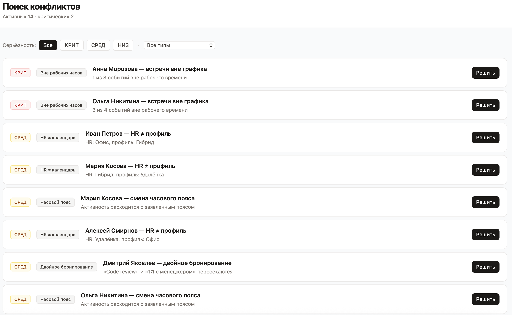
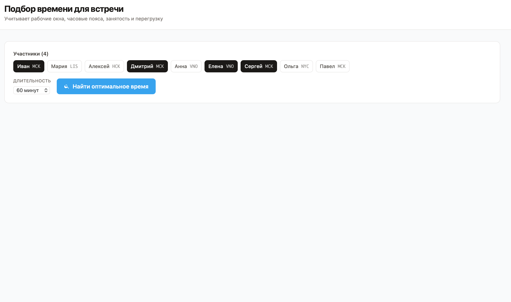
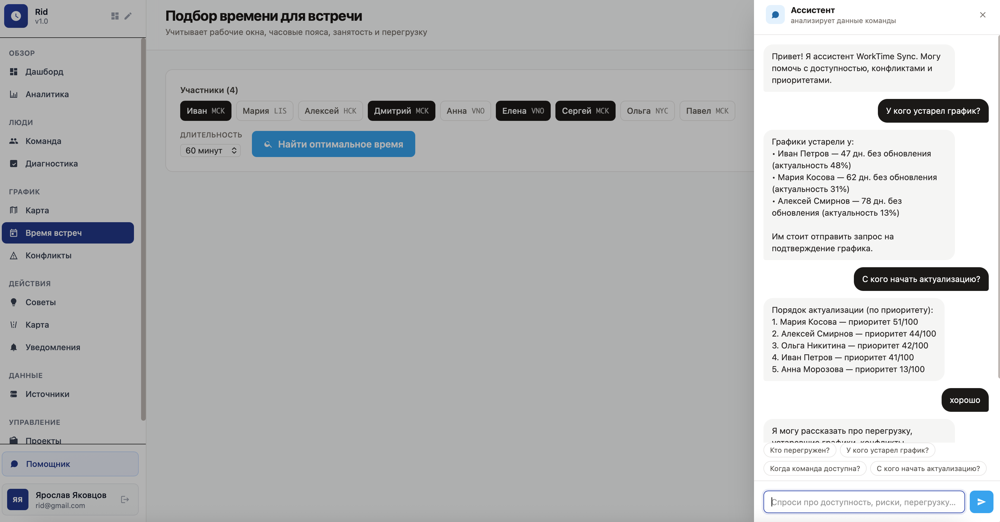

Система по актуализации рабочего времени сотрудников
Интеллектуальная веб-платформа, которая анализирует актуальность графиков, выявляет конфликты между источниками данных и помогает планировать работу на основе реальной доступности команды.
Проблема: данные о рабочем времени сотрудников разбросаны по календарям, HR-системе, задачам, табелям и обновляются нерегулярно.
Результат: встречи попадают вне рабочего времени, команда теряет время на ручную координацию.
главных вопроса кейса
- У кого высокий риск и почему?
- Где уже есть конфликты?
- Кто должен первым обновить график?
- Когда можно назначить общую встречу?
Что мы предлагаем
WorkTime Sync — единая точка, где сотрудник, руководитель, HR и проектный менеджер видят актуальность графиков, конфликты, доступность команды и рекомендации по действиям.
Проект, роли и участники
Общая ситуация по команде
Актуальность и риски
Автопоиск проблем в расписании
Подбор окна для встречи
Быстрый доступ к выводам

Как наш MVP закрывает требования кейса
- Авторизация и работа с проектами
- Профили сотрудников: дни, часы, часовой пояс, формат работы
- Исключения: отпуск, больничный, командировка
- Имитация данных из календаря, HR и других источников
- Автоматический расчёт показателей и рисков
- Аналитика, диагностика, рекомендации и уведомления
Для MVP важно: у нас уже не просто форма хранения графиков, а рабочий аналитический контур, как и требуется в задании.

Какие показатели мы считаем в коде
- Актуальность графика и дни с последнего обновления
- Доля встреч вне рабочего времени и количество конфликтов
- Уровень загрузки и интегральный риск неактуальности
- Командное окно доступности и приоритет актуализации
- Рекомендованное время для встречи
Ключевой акцент: в кейсе было важно не только придумать формулы, но и реализовать их в работающем коде.


Как у нас реализована AI-часть кейса
Пользователь может не искать вручную по экранам, а задать вопрос простым языком и быстро получить прикладной ответ по данным команды.
- Кто перегружен?
- У кого устарел график?
- Когда команда доступна?
- С кого начать актуализацию?

Что дальше
- Реальные интеграции с календарями, HR и таск-трекером
- Автоматические уведомления и запросы на подтверждение графика
- Создание встреч прямо из найденного окна
- История изменений и контроль актуальности
- Более сильный AI-слой поверх реальных данных
Мы закрыли аналитический MVP на синтетических данных и показали, как рабочее время превращается из статичной записи в инструмент планирования и управления нагрузкой.
Этим слайдом удобно завершать доклад и переходить к вопросам ментора.